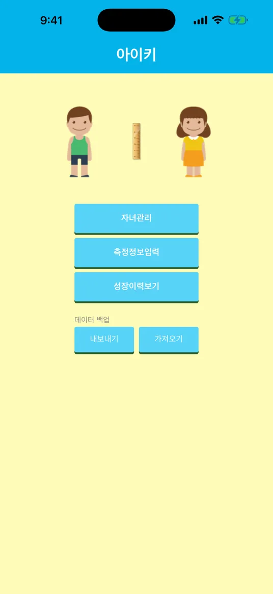

1-1
메인
앱을 열면 나오는 첫 화면이에요.
- 자녀관리 — 아이를 등록하거나 지워요. 처음이라면 여기부터 시작하세요.
- 측정정보입력 — 잰 키·몸무게를 넣고 백분위를 봐요.
- 성장이력보기 — 지금까지의 기록과 성장 그래프를 봐요.
- 데이터 백업 — 기록을 파일로 내보내기하거나, 저장해 둔 파일을 가져오기해요(4장).
아이폰에서 처음 열면 “앱 추적 허용” 창이 떠요. 광고를 맞춤으로 보여 줄 때만 쓰고, 허용하지 않아도 모든 기능을 그대로 쓸 수 있어요.
안드로이드는 메인에서 뒤로 버튼을 한 번 더 누르면 앱이 닫혀요.